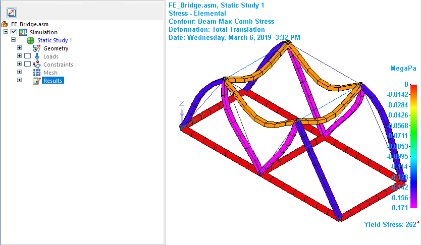
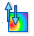
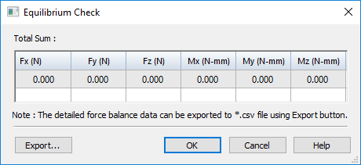
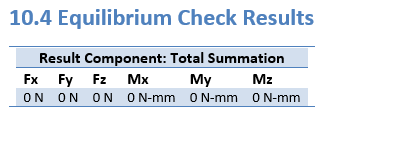

Verify linear static stress results are at equilibrium
For a Linear Static study, you can use the Equilibrium Check command to quickly confirm the results are in a steady state. This command calculates the difference between the total input force and the total reaction force, and displays the values in the Equilibrium Check dialog box. If most of these values are equal or close to zero, the study is considered to be at equilibrium (a steady state).
-
Solve a Linear Static study.
Note:For previously solved studies, the Equilibrium Check command is not available until you generate fresh results using the Solve command.
The default stress plot is shown in the results window.

-
Choose the Home tab→Equilibrium Check command

.The equilibrium check calculates the total summation of forces (Fx, Fy, Fz) and moments (Mx, My, Mz) for the simulation study geometry.
-
Review the values in the Equilibrium Check dialog box, which shows the force balance data for all nodes and elements.
Most of the values should be equal or nearly equal to zero.

Note:When all of the forces that act upon an object are balanced, the object is considered to be in a state of equilibrium. Balanced means the sum of the forces in one direction (the total input force) are equal to the sum of the forces in the opposing direction (the total reaction force).
If the values are not near zero, or if you want them to be exactly 0.000, you can modify the load or constraint values used in the study.
-
To review and share the detailed force balance data, you can:
-
Save the data as an Excel spreadsheet—In the Equilibrium Check dialog box, click the Export button. The default file name is EquilibriumCheckData.csv.
-
Generate a Simulation Results report—Select the Home tab→Output Results group→Create Report command
 .
. The force balance data is included by default in the Results section, under Equilibrium Check Results.
Example:
-